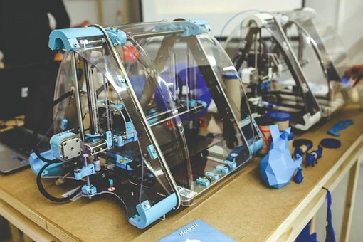

Printing has been a very old art. It has been into reality from the hour of old Chinese and Indian culture when they use to print on papyrus leaves and on stone tablet. The industrialization of printing changed the outer look of the world. World began learning, understand and thinking. Printing innovation expanded the idea of education, information, books and news arriving from all over the world. This makes printing technology one of the most significant and demandable technology to attempt on printing innovation in Germany.
The world might change but the main steady thing will have books. Furthermore if you have books you can never be separated from everyone, if you know you will never be disconnected. Study on the Printing Technology in Germany and media innovation, which covers the entire elements of applied communication engineering from text and picture handling, print planning, the printing system, and at the end finishing up.
Whenever you advance to the field of print engineering your focus may change either to handle engineering or to business the management fields. Whenever you discuss media innovation it is essential to be aware of the most recent innovation available for use in the world. The engineering spotlights reproduction and creation innovation. You find out about everything connected with it from the development of print structures, printing, and completing cycles. They focus on bundling innovation. The program manages the creation and utilization of bundling materials of various types (paper, cardboard, film).